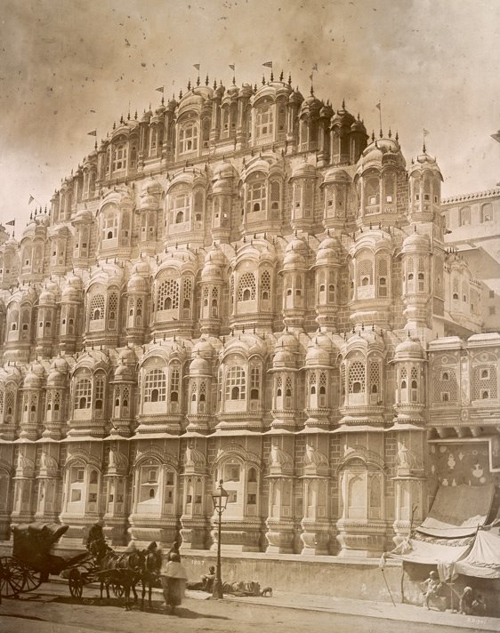
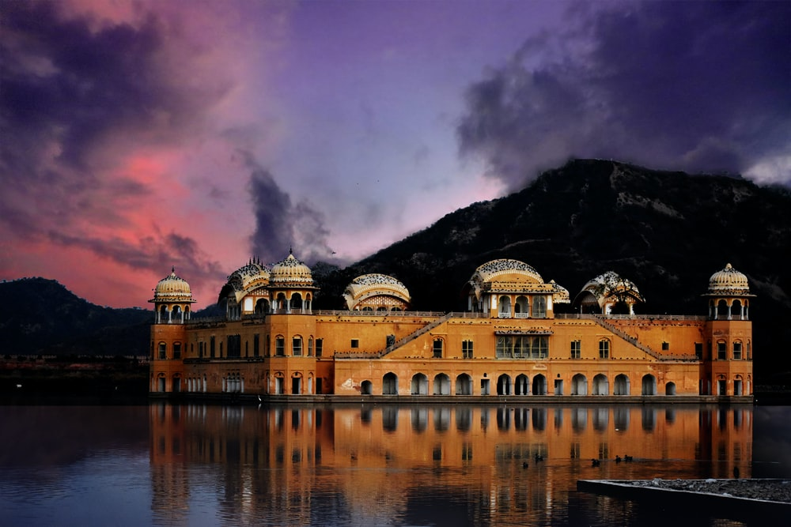

Jaipur : The Pink City
Jaipur is the capital of India's Rajasthan state. It evokes the royal family that once ruled the region and that, in 1727, founded what is now called the Old City, or “Pink City” for its trademark building color. The city of Jaipur is one of India's architectural wonders. It houses some of the country's most ornate royal palaces -- elaborate structures designed hundreds of years ago that still captivate visitors today. Largely built in the 1700s under the order of Rajput ruler Sawai Raja Jai Singh II, Jaipur is surrounded by a city wall and several defensive forts. Conceived as a commercial center in the state of Rajasthan, it was considered ahead of its time due to the use of grid iron city planning.
A romantic dusty pink hue -- which has defined the city since 1876, after it was painted pink to welcome Queen Victoria's husband, Prince Albert -- gives Jaipur its status as the "Pink City," as it is commonly known.
Some of the most visited and recommended places to visit in Jaipur are:
- Hawa Mahal
- Amer Fort
- Jal Mahal
Hawa Mahal-"The Palace of Wind"
Situated at Badi Choupad, Pink City of Jaipur, Hawa Mahal was built in 1799. It has 953 windows on the outside walls. The honeycomb shaped and beautifully carved windows allow breeze to blow through the palace and makes it a perfect summer palace. It was built as an extension to the City Palace nearby.
History In 1799, the Kachhwaha Rajput ruler, Sawai Pratap Singh, grandson of Maharaja Sawai Jai Singh ordered Lal Chand Usta to construct an extension to the Royal City Palace. The Purdah system at the time was strictly followed. Rajput royal ladies should not be seen by strangers or appear in any public area. The construction of Hawa Mahal allows the royal ladies to enjoy from every day street scenes to royal processions on the street without being seen.
Architecture The five-stores palace was built in the form of Krishna's crown because Sarai Pratap Singh was devoted to Krishna, the Hindu god.
The mahal has a total of 953 small casements each with small lattice worked pink window, balconies and arched roofs with hanging cornices. This allows cool breeze blow through the mahal and keep it cool and airy in summer. Despite the large number of windows, each of them are size of a peep hole such that the royal ladies were not to be seen by the public.
The top three storeys are a single room thick, namely Vichitra Mandir, Prakash Mandir and Hawa Mandir. The Maharaja worshipped the Krishna at the Vichitra Mandir. while the Prakash Mandir provides an open terrace to both sides. Worth noting is that there are no steps to the upper floors but ramps. They are for the palanquin of the royal ladies.
Lal Chand Usta was the architect. Built-in red and pink colored sandstone, in keeping with the décor of the other monuments in the city, its coloris a full testimony to the epithet of "Pink City" given to Jaipur.Its façade with 953 niches with intricately carved jharokhas (some are made of wood) is a stark contrast to the plain-looking rear side of the structure
Best time to visit The best time to visit Hawa Mahal is in the early morning the sun enters the rooms from the windows. The mahal is illuminated with sun lights.
Hawa Mahal Opening Hours and Entry Fees
Opening time
Hawa Mahal opens daily. It does not close on public holidays or Sunday.
Time open: 9:00a.m. - 4:30p.m. daily
Entrance Fees
Local Indians: Rs. 10
Foreigners: Rs. 50
Fastfacts of Hawa Mahal
Q: When was it built?
A: Hawa Mahal was built in 1799 A.D by Maharaja Sawai Pratap Singh.
Q: Where is the entrance?
A: The entrance is through the City Palace where doors open into a open spacious courtyard with two-storeyed buildings on three sides.
Q: How many windows are there in Hawa Mahal?
A: There are 953 windows
Q: Do you know that Hawa Mahal has no foundation?
A: That's correct. Hawa Mahal was built without foundation. In fact, it is the tallest building in the world without a foundation. The five-storey building managed to maintain upright because of it is curved shaped. Just another masterpiece of Rajput and Mughal architecture.
Q: What is the purpose of building Hawa Mahal?
A: Royal ladies were not to be seen by public. The palace was built such that the ladies can watch festival celebrations and all other activities on the street without being seen.
Q: Why are there so many windows?
A: There are two purposes for the seemingly excessive number of windows. First, when there are windows everywhere, the royal ladies can look out to the street anywhere they want. Secondly, the windows allow breeze to flow through and help to keep the palace cool. It thus makes it an ideal summer palace.
Q: What style of architecture is it?
A: Hawa Mahal exhibits a unique combination of Mughal and Rajput architectural styles.
Q: Does it relate to any god?
A: The palace is devoted for Krishna and thus in the shape of Lord Krishna's crown
Amer Fort
Amer Fort or Amber Fort is a fort located in Amer, Rajasthan, India. Amer is a town with an area of 4 square kilometres (1.5 sq mi)[1] located 11 kilometres (6.8 mi) from Jaipur, the capital of Rajasthan. The town of Amer and the Amber Fort were originally built by Raja Man Singh and additions were, later, made by Sawai Jai Singh. Located high on a hill, it is the principal tourist attraction in Jaipur. Amer Fort is known for its artistic style elements. With its large ramparts and series of gates and cobbled paths, the fort overlooks Maota Lake, which is the main source of water for the Amer Palace.
Mughal architecture greatly influenced the architectural style of several buildings of the fort. Constructed of red sandstone and marble, the attractive, opulent palace is laid out on four levels, each with a courtyard. It consists of the Diwan-e-Aam, or "Hall of Public Audience", the Diwan-e-Khas, or "Hall of Private Audience", the Sheesh Mahal (mirror palace), or Jai Mandir, and the Sukh Niwas where a cool climate is artificially created by winds that blow over a water cascade within the palace. Hence, the Amer Fort is also popularly known as the Amer Palace. The palace was the residence of the Rajput Maharajas and their families. At the entrance to the palace near the fort's Ganesh Gate, there is a temple dedicated to Shila Devi, a goddess of the Chaitanya cult, which was given to Raja Man Singh when he defeated the Raja of Jessore, Bengal in 1604. (Jessore is now in Bangladesh).Raja Man Singh had 12 queens so he made 12 rooms, one for each Queen. Each room had a staircase connected to the King’s room but the Queens were not to go upstairs. Raja Jai Singh had only one queen so he built one room equal to three old queen’s rooms.
Geography
Amer Palace is situated on a forested hill promontory that juts into Maota Lake near the town of Amer, about 11 kilometres (6.8 mi) from Jaipur city, the capital of Rajasthan. The palace is near National Highway 11C to Delhi.[17] A narrow 4WD road leads up to the entrance gate, known as the Suraj Pol (Sun Gate) of the fort. It is now considered much more ethical for tourists to take jeep rides up to the fort, instead of riding the elephants.
Early History
The Amber fort was expanded by Jai Singh I. It underwent improvements and additions by successive rulers over the next 150 years, until the Kachwahas shifted their capital to Jaipur during the time of Sawai Jai Singh II, in 1727.
Takeover of Amer Fort by Kachwahas
The Amer Palace was created in the late 16th century, as a larger palace to the already existing home of the rulers. Amer was known in the medieval period as Dhundar (meaning attributed to a sacrificial mount in the western frontiers) and ruled by the Kachwahas from the 11th century onwards - between 1037 and 1727 AD, till the capital was moved from Amer to Jaipur. The history of Amer is indelibly linked to these rulers as they founded their empire at Amer.
Information about Amer Fort
| Location | Timings | Entry Point | Still and Video Cameras | Commissioned by |
|---|---|---|---|---|
| Devisinghpura, Amer, Jaipur | 8 AM to 7 PM | Sun Gate, Suraj Pol | Allowed | Raja (King) Man Singh |
| Entry Fee | Architectural Style | Status | Year of Establishment | Area |
|
Foreigners – INR 550 per person Foreign Students – INR 100 per person Indians – INR 50 per person Indian Students – INR 10 per person |
Blend of Mughal and Rajput architecture | UNESCO World Heritage Site | 1592 | 988.422 acres |
| Material Used |
Best Time to Visit |
|||
| Red sandstone and marble | Winters – (October to February) |
Jal Mahal
Jal Mahal (meaning "Water Palace") is a palace in the middle of the Man Sagar Lake in Jaipur city, the capital of the state of Rajasthan, India. The palace was originally constructed in 1699; the building and the lake around it were later renovated and enlarged in the 18th century by Maharaja Jai Singh II of Amber.
The Jal Mahal palace is an architectural showcase of the Rajput style of architecture (common in Rajasthan) on a grand scale, from Mughal architecture. The building has a picturesque view of Man Sagar Lake, but owing to its seclusion from land is equally the focus of a viewpoint from the Man Sagar Dam on the eastern side of the lake in front of the backdrop of the surrounding Nahargarh ("tiger-abode") hills.
The palace, built in red sandstone, is a five-storied building, of which four floors remain underwater when the lake is full and the top floor is exposed[citation needed].[1] One rectangular Chhatri on the roof is of the Bengal type. The chhatris on the four corners are octagonal. The palace had suffered subsidence in the past and also partial seepage (plaster work and wall damage equivalent to rising damp) because of water logging, which have been repaired under a restoration project of the Government of Rajasthan.
The hills surrounding the lake area, towards the north east of Jaipur, have quartzite rock formations (with a thin layer of soil cover), which is part of the Aravalli hills range.
Rock exposures on the surface in some parts of the project area have also been used for constructing buildings. From the northeast, the Kanak Vrindavan valley, where a temple complex sits, the hills slope gently towards the lake edge. Within the lake area, the ground area is made up of a thick mantle of soil, blown sand, and alluvium.
Forest denudation, particularly in the hilly areas, has caused soil erosion, compounded by wind and water action. As a result, silt built up in the lake incrementally raises the lake bed.[3] On the terrace of the palace, a garden was built with arched passages. At each corner of this palace semi-octagonal towers were built with an elegant cupola.
Restoration works of the early 2000s were not satisfactory and an expert in the field of similar architectural restoration works of Rajasthan palaces carefully examined the designs that could decipher the originally existing designs on the walls, after removing the recent plasterwork. Based on this finding, restoration works were re-done with traditional materials for plastering - the plaster consists of partly organic material: a mortar mix of lime, sand and surkhi mixed with jaggery, guggal and methi powder.
It was also noticed that there was hardly any water seepage, except for a little dampness, on the floors below the water level. But the original garden, which existed on the terrace had been lost. Now, a new terrace is being created based on a similar roof garden of the Amer Palace.[1] The building is located near the shoreline of a lake with a maximum depth of 15 ft. As the 4 stories of the building are built under the water, this means it would be structured on the bottom of the lake.
History
Jal Mahal, one of the top places to visit in Jaipur, doesn't have any recorded history about who built it or when. However, it is popularly believed that Maharaja Sawai Pratap Singh constructed Jal Mahal in 1799 to serve as a hunting lodge during his duck shooting trips.
Some people also credit Maharaja Madho Singh I for the construction of this palace and date its origins back to the 1750s. Regardless of who built the palace, it was never meant to be used as a regular palace for living.
Later, the palace was renovated by Maharaja Jai Singh II of Amber in the 18th century.Over the years, the structure suffered subsidence due to partial seepage of lake water and waterlogging issues. After several years of deterioration and neglect, renovation works were carried out in the early part of the 21st century to restore the palace into its former glory.
Though the palace and many of its features have been restored, its original terracegarden could not be salvaged. Plans are on to create a new terrace garden modeled on the rooftop garden of the famous Amer Palace in Jaipur.
How to reach Jal Mahal?The palace is easily accessible by bus, auto, and taxis. The nearest bus stop is Shahpura Bagh which is 200 m from Jal Mahal. To explore the various tourist attractions of Jaipur in a comfortable manner, you can book a cab from top car rental companies in Jaipur and have a hassle free tour of Jaipur city.
Why To Visit Jaipur?
The Royal Land of the Rajputs and Maharaja's is now a top tourist destination in India. There are many reasons to visit Jaipur and learning the rich history of the past is one great reason. Many of the palaces are now luxury hotels that give a life of a King to the guests for a day or few days at an expensive price.
Jaipur attracts people for the innumerable fairs and festivals held here, the interesting activities for tourists, shopping at the back lane markets and best of all to see the mighty forts and palaces there. Every time you visit Jaipur there is something new about the Pink city of Rajasthan.
Heritage & Architecture of Jaipur
This royal city has regal heritage in abundance that you must learn and explore. For that visit Jaipur for the history culture heritage and architecture of the place. The Jantar Mantar is a huge sun observatory with a sun dial and instruments to measure the planetary movements.
The royal palaces some built as summer resort home, some for resort on pleasure trip, palace residences, and walled in city or defense forts. There is so much to see in Jaipur, the pink city full of magnificent forts with a historic story about it. As you travel from one place to another you can explore the rich culture and rich heritage of Jaipur.

The monuments showcase the architectural brilliance and of the artisans who designed these structures in this legendary royal state of desert sands. It is an awe-inspiring journey into the regal architecture defining the culture and heritage of these historic landmarks.